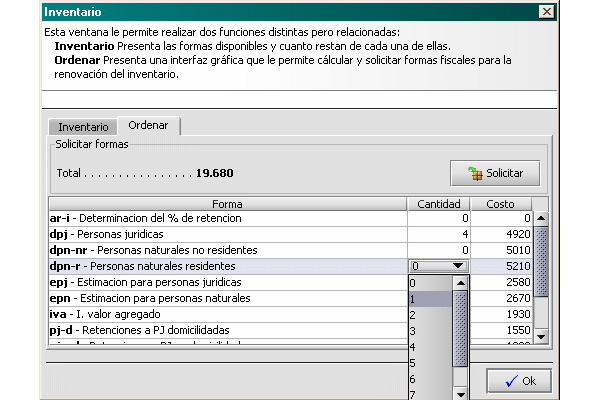
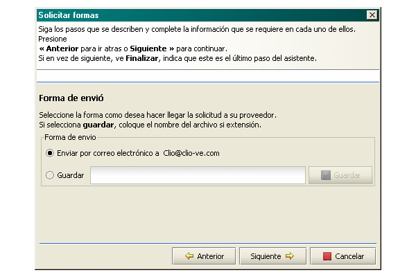

Solicitud de nuevas formas
Describe los pasos necesarios para solicitar la renovación del inventario con nuevas formas fiscales.
- Presione el botón Inventario y seleccione la pestaña ordenar.
- Haga clic sobre cualquiera de los elementos de la columna cantidad. Allí aparecerá una lista donde puede seleccionar el número de unidades que desea adquirir. Cada vez que cambie la cantidad, Se actualizará el campo Total. (este muestra el moto total de la compra)

- Cuando este listo. Presione Solicitar.Esta acción presentara un asistente para completar la solicitud de las formas. Complete la información que se describe en cada una de los pasos. En uno de ellos, se le solicitara el tipo de envió por correo o guardar en una carpeta

- Si elige guardar, debe colocar el nombre del archivo (y su ubicación, carpeta) en el campo de entrada. Puede presionar guardar para abrir un dialogo de entrada que le permite seleccionar la carpeta y colocar el nombre bajo el cual desea guardar la solicitud. Una vez hecho esto, debe enviar por correo (a la dirección que aparece en la opción enviar) los archivos que acaban de crear. (dos en total: un archivo .html con solicitud escrita y un archivo .jar).
- Si elige Enviar, el proceso de envió se hará automáticamente. Es evidente que deberá tener una conexión a Internet y que esta deberá estar activa.
Para ambos caso, la solicitud se procesara y la respuesta será enviada a la dirección de correo electrónico remitente.
Ver
Inventario
Recepción de formas